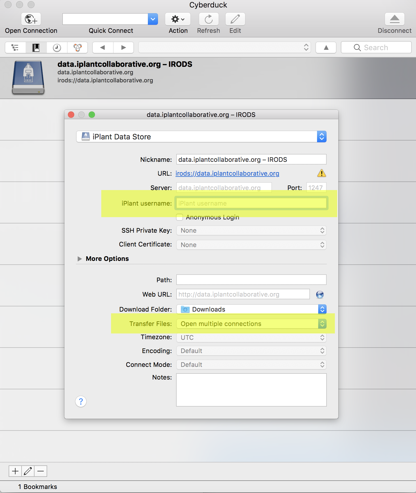
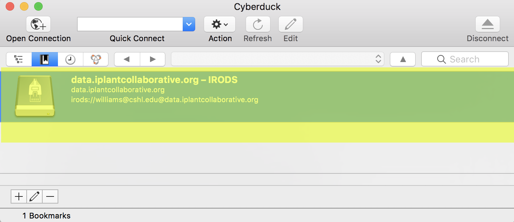
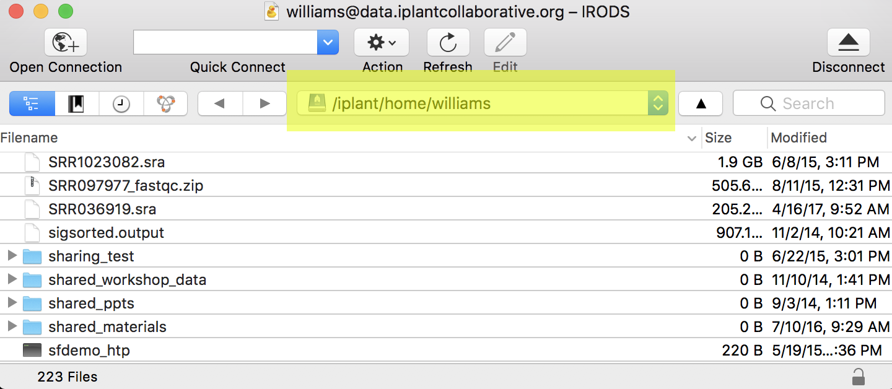
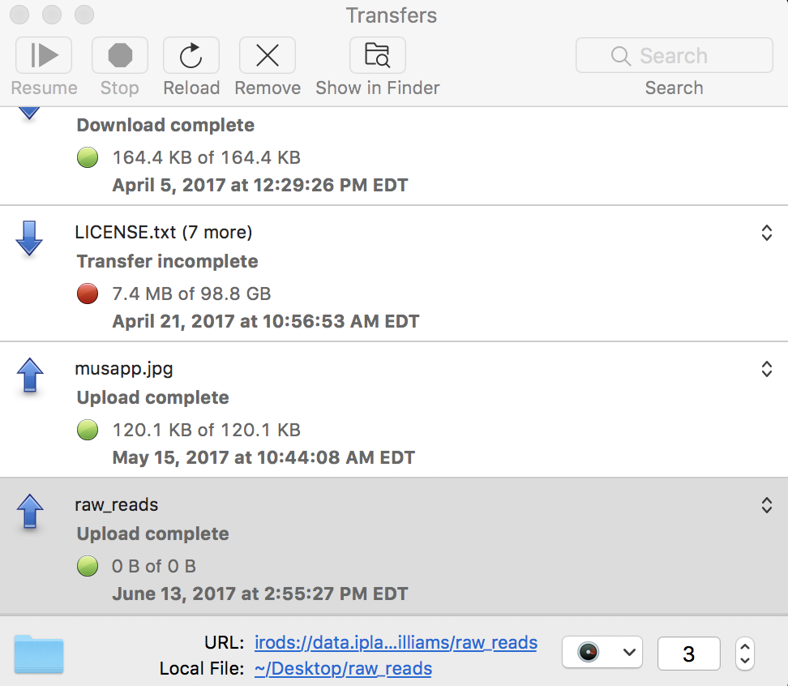

Drag-and-drop Data Transfer with Cyberduck¶
Cyberduck is a 3rd party software (available as freeware) tool that allows you to drag-and-drop files between your local computer and the Data Store. Cyberduck can also be used to rename files, and browse other shared or public Data Store locations.
Download and first-time configuration of Cyberduck¶
Download Cyberduck at the Cyberduck Website; follow the installation instructions for your operating system.
Download the CyVerse connection profile Double-click on the downloaded file - this should open the installed Cyberduck software.
In the Cyberduck configuration window, enter your CyVerse username in the field 'iPlant username'.
Under 'Advanced Options' ensure 'Transfer Files' option is set to 'Open Multiple Connections'. Close this window - your entries will be automatically saved. 
Double-click on the Data Store bookmark in the Cyberduck window. Enter your CyVerse credentials. 
You should now be connected to the CyVerse Data Store and viewing the contents of your home directory.
Tip
At the top of your Cyberduck window you can see your location within the Data Store. From Cyberduck's 'Go' menu, you can select 'Go to folder' to navigate to any other Data Store location that is public or shared with you. 
Upload from local computer to Data Store using Cyberduck¶
Warning
When uploading your data to the Data Store you should not upload files/ folders with names containing spaces (e.g. experiment one.fastq) or name that contain special characters (e.g. ~ ` ! @ # $ % ^ & * ( ) + = { } [ ] | : ; \" \' \< > , ? /). The Apps on the Discovery Environment and most command line applications will typically not tolerate these characters. For long file/folder names the use of underscores (e.g. experiment_one.fastq) is the recommended practice.
Double-click on the Data Store bookmark to connect to the Data Store
Select file(s)/folder(s) from your local machine and drag them into the Cyberduck window. (You may drag directly into an existing folder or from the Cyberduck 'File' menu, create a new folder).
A 'Transfers' window will appear. Monitor the upload to completion. 
Download from Data Store to local computer using Cyberduck¶
- Double-click on the Data Store Bookmark to connect to the Data Store
- Select file(s)/folder(s) in the Data Store (Cyberduck window) and drag them to a location on your local computer.
- A 'Transfers' window will appear. Monitor the download to completion.
Tip
In the Cyberduck 'File' menu, there are several more functionalities. You can for example directly specify files and folders to move without dragging and dropping them. You can also 'synchronize' folders - only copying items that are missing in a folder rather than copying all contents.
Fix or improve this documentation
- Search for an answer: CyVerse Learning Center
- Ask us for help: click on the lower right-hand side of the page
- Report an issue or submit a change: Github Repo
- Send feedback: learning@CyVerse.org